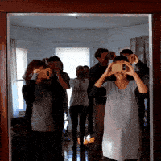

|
What is the relation between large collective structures and individual perception? How is the movement modified by visual pertubation? Can videogames and virtual reality be used to study physical problems? |
 |
To answer those questions, I have designed a multipayer virtual reality videogame. Complex collective movements can emerge when simple rules are given to each participants. This project is in progress and its evolution is currently dependant of the reaction of the participants and the emergence of collective organisation. |
|
I am more than interested to discuss and present this project everywhere. The game can accomadate around thirty people, and only necessitate a room big enough to fill all the participants. One run of the experiment should take approximatively twenty minutes. Do not hesitate to contact me for further information. |